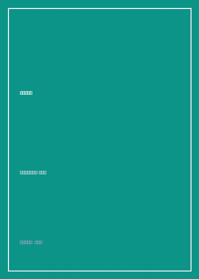

《幸福的方法》

总体观点
幸福（Happiness）绝非外部名利声望的副产品，而是人生不可替代的‘终极货币（The Ultimate Currency）’。金钱、地位与成功仅仅是实现幸福的手段，若将手段本身误当成终极目标，只会陷入永无止境的物质追逐内耗与心灵荒漠。衡量一笔生意或人生活动是否真正划算的唯一标准，不是它赚了多少美元，而是它为生命带来了多少深层的幸福盈余。
幸福是‘当下快乐与未来意义的交集’。本-沙哈尔构建了著名的‘人生四象限汉堡模型’：‘忙碌奔波型（盲目牺牲当下快乐以期未来虚妄成功）’、‘享乐主义型（沉溺即时快感而透支未来）’、‘虚无主义型（对过去沉沦对未来绝望）’，以及真正的‘感悟幸福型（既享受当前行动的过程愉悦，又深信行动蕴含长远价值）’。唯有第四象限才能实现持久充盈。
幸福不是某种到达之后即可一劳永逸躺平的‘终点站’，而是一种可以通过刻意练习逐步提升的‘心理肌肉能力’。通过建立积极的日常例行习惯（如每日感恩日记、重构工作为使命、设立自我和谐的挑战目标），并在遭遇挫折时无条件接纳自我不完美与负面情绪，每个人都能突破原有的幸福基准线，持续扩展生命的快乐容器。
核心观点
-
1. 汉堡模型与人生四种生活方式
本-沙哈尔用四种汉堡比喻四种人生观：垃圾食品汉堡（享乐主义，当时爽事后痛苦）、难吃的健康汉堡（奔波劳碌，当时痛苦期望未来受益）、腐烂最差汉堡（虚无主义，当下未来皆绝望），以及营养又美味的理想汉堡（感悟幸福型，当下享受且未来有益）。
回忆自己16岁夺得以色列全国壁球冠军的瞬间：在经历了五年严酷断绝一切娱乐的高压苦练后，夺冠当晚狂吃汉堡时感到的不是持久狂喜，而是无尽的空虚与迷茫，由此觉醒对奔波劳碌型人生的深刻反思。 -
2. 终极货币视角重估商业与生命价值
商业社会习惯用国内生产总值（GDP）或银行账户余额衡量成败，然而富裕社会中抑郁症与焦虑症患病率的暴增揭示了‘情感大萧条’。唯有将幸福确立为价值衡量的度量衡，一切决策才能回归理性。
面对一份年薪百万但每天让人感到恶心窒息的工作，与一份薪水适中但充满创造激情与社会奉献的工作：终极货币理论清晰指出后者是压倒性的暴利投资，而前者是巨额的精神破产亏损。 -
3. 自我和谐目标（Self-Concordant Goals）的动力
许多人拼命追求的目标其实是父母期望或社会同辈压力的外在强加产物，即使达成也毫无成就感。自我和谐的目标源自内在最真实的价值观与热爱情感，追求此类目标能带来充盈的自驱力，且追求过程本身就是丰厚的奖赏。
调查追踪显示，那些为了‘对领域纯粹好奇’而非‘为了向亲友炫耀优越感’选择考博的学生，不仅学业科研产出更高，在求学期间的心理健康与幸福指数也显著超越对照组。 -
4. 打造‘幸福催化剂’（Happiness Boosters）微习惯
改变生活不一定需要辞职或彻底重塑人生轨迹。每天在日程表中插入几段哪怕只有15-20分钟的‘幸福催化剂’微习惯（如听一首古典乐、与知己散步、静心阅读），就能像强心针一样改变全天的心境基调。
一位工作繁重的儿科医生每天在查房前后固定安排15分钟闭目聆听巴赫无伴奏大提琴组曲，这微小的习惯催化剂让他重新找回了治愈患者的平静爱心与充沛精力。 -
5. 允许自己成为人（Permission to Be Human）
对完美的病态苛求是扼杀幸福的头号凶手。真正的心理成熟不是消灭悲伤、嫉妒、焦虑等消极情绪，而是无条件允许自己体验这些人之常情；唯有全然接纳自己的脆弱，积极情绪的泉眼才能重新畅通涌出。
哈佛课堂上本-沙哈尔坦白自己作为积极心理学教授依然会遭遇沮丧与愤怒，关键在于不要因为‘我竟然不快乐’而产生次生自责内耗，给予情绪自然的代谢周期。
全书思维导图 · 知识脉络树
全书结构
-
第1章 什么是幸福：汉堡模型与人生的四种状态
提出幸福四象限分析框架，解剖奔波劳碌型、享乐主义型、虚无主义型与感悟幸福型四种截然不同的人生命运轨迹。
以自己青少年时期严酷备战壁球大赛夺冠后的空虚经历为引子，颠覆‘成功必定伴随当下痛苦’的传统错误认知。 -
第2章 解读幸福：快乐与意义的终极货币
论证幸福是当下快乐与未来深层意义的完美交融，确立幸福作为衡量人生一切得失与商业决策的‘终极货币’基准地位。
对比华尔街高薪交易员与无国界医生志愿者在不同生命阶段的精神资产负债表，生动阐释终极货币的计算逻辑。 -
第3章 设定目标：自我和谐与过程享受
探讨目标的真正功能不是为了达成那一瞬间的短暂狂喜，而是为了在旅途中赋予行动明确方向感并释放当下过程的沉浸乐趣。
引用心理学家谢尔登的长期实证研究，证明发自内心自我认同的目标能为机体注入持久源源不断的内驱活力。 -
第4章 幸福在工作：将差事重构为天职使命
指导职场人重构日常劳动，通过识别并应用个人核心优势、塑造工作内容与发现社会价值，将机械乏味的工作转变为使命（Calling）。
展示普通行政文员如何通过主动增添为新员工设计温馨入职导引卡等创新工作细节，将枯燥日常转变为赋能他人的舞台。 -
第5章 幸福在亲密关系与教育：无条件的爱
解析人际纽带与爱情对幸福的决定性支撑，破除‘寻找完美伴侣’的神话，倡导在深层理解与共同成长中栽培亲密关系。
阐明无条件的爱是针对对方真实的内在核心品质而非外在财富外貌，这种深层心理安全感是抵抗外界风暴的最强后盾。 -
第6章 幸福的冥想：将知识转化为日常行为
总结全书，给出具体可实操的幸福行动练习（每日感恩日记、简化日程安排、身体运动与深呼吸冥想），迈向丰盈人生。
指导读者建立每天睡前写下三件值得感恩之事的‘感恩仪式’，展示连续实践21天后神经回路与主观幸福感的显著重塑。